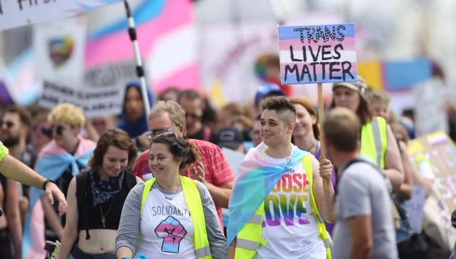

DATE: 2025-06-15
The Queer Mermaid
Disney’s animated “The Little Mermaid” is a hidden queer story. Multiple analyses of her Ariel, the main protagonist, from a feminist and non-feminist perspective have circulated online in the past. Still, I want to view the story from a queer angle—specifically, a transgender identity.
The biggest argument for my piece is that Ariel is fascinated with an almost uncontrollable curiosity with the human world, a world in which she can’t belong. Much like how transgender men and women are fascinated with the opposite gender. “They may have vague feelings of ‘’’not fitting in’’’ with people of their assigned sex or specific wishes to be something other than their assigned sex.” (APA)
Her grotto serves as a great symbol to support this perspective. It’s a secret - no other mermaid or merman knows - and only her closest and most trusted friend knows. It parallels this Vogue project, “Unbox Me” where Kushwah takes photos of transgender-identifying women and documents their stories of hidden treasures inside boxes. The boxes filled with feminine items - mom’s lipstick, a Barbie doll, high heels no one wears - were kept stashed under the bed or on the top shelf of the closet behind some boxes.
A notable quote before she sings “Part of that World” is “I just don't see how a world that makes such wonderful things can be bad”. Taken at this surface level, it means how humans have created wonderful things, like bread, and how it can’t be “bad”. Taking a deeper examination, in her grove of treasures, her longing to be human, and if we can translate human to sex, treasures to dolls, and wonderful things to everything associated with the feminine body, we can see how a transgender woman can relate to this. To long for a world where he can express himself and herself freely, to partake and participate in the same activities and joys of being a woman without judgement, shame, or the silent urge to hide it all.
Fantasy doesn’t meet reality at all. When her father finds out, he’s thrown himself into a fit of rage at a declaration of love, destroying everything in her grove. I can match this to when fathers find the box of transgender women as kids, and destroy the items, the items that make them feel safe, heard, and secure. Can you imagine this experience as a young teenager? The figure that is meant to protect you, to never hurt or harm you, rejects your identity, literally destroying any piece of evidence that ties you to this other world? It scars emotionally, turns everything you know upside down. So you leave. And find a way to be unhurt. Although I can’t find documented stories of this happening besides Reddit pages, I want to bring up a scene from the Hulu show, “Pose”. In this scene, Angel, a transgender woman, explains how she was abused by her father for stealing red heels. She states, “My father slapped me across the face…For stealing. But more so for what I chose to steal[red heels]” (Pose 1x3 3:00).

Many people criticize Ariel for going to Ursula. But what else? If she can’t trust her father, her own family, where else can she go for trust? To feel heard and sympathized with? Ursula gives her this, although hidden behind an agenda to use her. Doesn’t it parallel transgender women who leave their homes to find their “found family”? To find love and acceptance? Instead of criticism, we need to sympathize.
I see Ursula, looking past her design that’s based on a drag queen -- which is fabulous, through the lens of authority. A powerful figure that was meant to protect the youth, but instead calculates a way for political gain. She’s representative of a corrupted figure, disguising her interest in support for the mistreated for power.
The darkest way I can see this is paralleling real cases of grooming and sex trafficing in transgender youth, something that absolutely should not be happening and anyone with the right mind would see how this absolutely should not be happening, for anyone, for any youth, but we choose to turn a blind eye when it affects the transgender community. “Unseen, Part 4” is an amazing investigative article on transgender individuals and their sexual exploitation at a young age.
I also see Ursula in the likes of Caitlyn Jenner, J.D. Vance, and Gavin Newsom. Political figures who once shouted for trans rights, only to now back down on it, discriminate against transgender athletes. A simple ChatGPT/Google search on these figures and past would show documented evidence of their hypocrisy.
Of course, the end of “The Little Mermaid” is a joyous one, with Ariel becoming human, like gender-affirming surgery, approved by her father. With a marriage and a union between the mer-world and the human world. Sadly, this isn’t the reality for most, and many of the transgender youth die young, but a movie that shines hope for the future will definitely positively impact those watching.
- American Psychological Association. “Transgender People, Gender Identity and Gender Expression.” American Psychological Association, https://www.apa.org/topics/lgbtq/transgender-people-gender-identity-gender-expression. Accessed 15 June 2025.
- Kushwah, Vikram. “Unbox Me: A Photo Series Inspired by the Experiences of Trans Children.” Vogue, 1 June 2023, https://www.vogue.com/slideshow/unbox-me-by-vikram-kushwah. Accessed 15 June 2025.
- Jarmanning, Ally. “Unseen Part 4: Trans Female Youth Face Greatest Risk of Sexual Abuse and Exploitation.” WGBH, 4 Oct. 2021, https://www.wgbh.org/news/national/2021-10-04/unseen-part-4-trans-female-youth-face-greatest-risk-of-sexual-abuse-and-exploitation. Accessed 15 June 2025.
- Pose. Created by Ryan Murphy, Brad Falchuk, and Steven Canals, performance by Indya Moore, season 1, episode 3, FX, 2018. Timestamp 3:00.